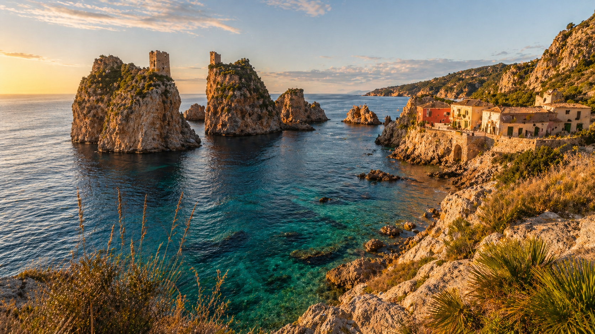
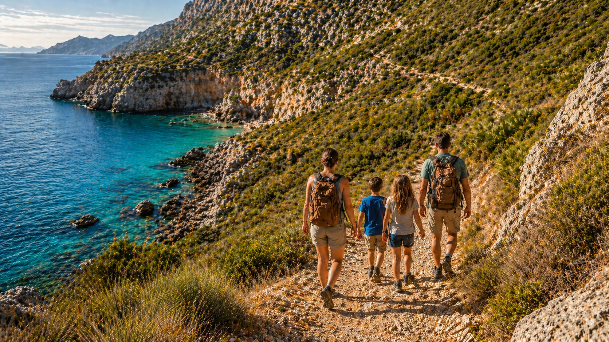

Aggiornamento aprile 2026: La Riserva dello Zingaro è parzialmente riaperta dal 14 marzo 2026 — solo l'ingresso sud da Scopello. L'ingresso nord è ancora chiuso. Questa guida riporta la situazione aggiornata.

🌿 Natura · Mare · Trekking
Sicilia in Famiglia · Esperienza
Zingaro e Scopello in Famiglia
La riserva più bella della Sicilia, i faraglioni di Scopello e le calette segrete — con bambini di ogni età. Aggiornata aprile 2026.
🗓️ Aprile – Ottobre
👨👩👧 0-3 · 4-9 · 10-12 anni
📍 Da Palermo ~45 min
⭐ Aggiornata 2026
Introduzione
Perché lo Zingaro vale ancora il viaggio
La Riserva dello Zingaro è stata per decenni il gioiello della Sicilia occidentale:
7 km di costa incontaminata, calette di acqua cristallina, macchia mediterranea profumata
di rosmarino e mirto. Un incendio doloso nel luglio 2025 ha devastato parte della riserva.
Ma la riserva resiste — e la sua bellezza vale ancora il viaggio.

⚠️ Situazione aggiornata — Aprile 2026
Dopo 8 mesi di chiusura, la riserva ha riaperto parzialmente il 14 marzo 2026,
solo dall'ingresso sud (Scopello/Castellammare del Golfo). L'ingresso nord da San Vito Lo Capo
è ancora chiuso per lavori. Le aree più danneggiate dall'incendio rimangono interdette.
Questa guida spiega esattamente cosa è accessibile e come organizzarsi oggi.
A pochi minuti dalla riserva si trovano i faraglioni di Scopello e la Tonnara —
uno dei paesaggi più fotografati di tutta la Sicilia. Con bambini di ogni età c'è sempre
il modo giusto per viverli: dal sentiero costiero al tour in barca, dalla Tonnara alla
spiaggia sabbiosa di Guidaloca.
Cosa trovi nell'esperienza completa
Situazione aggiornata — cosa è aperto e cosa no (aprile 2026)
Come arrivare da Palermo, Trapani e Castellammare
I sentieri della riserva con difficoltà reale per famiglie
Tonnara di Scopello — prezzi reali, prenotazione, consigli
Consigli pratici per 0-3, 4-9 e 10-12 anni
Itinerario ora per ora + checklist cosa portare
7km
Sentiero costiero (solo andata)
€5
Ingresso riserva · gratuito <10 anni
2026
Aggiornata ad aprile
🗺️Come arrivare — auto, parcheggio e ingressi
Da Palermo bastano circa 45 minuti in auto via A29, uscita Castellammare del Golfo. L'auto è praticamente obbligatoria — non esistono collegamenti diretti con i mezzi pubblici. Il parcheggio all'ingresso sud è gratuito, mentre alla Tonnara di Scopello è a pagamento: €7 al giorno, €5 dopo le 15:00. Attenzione: in estate i parcheggi si riempiono...
🔒 Contenuto riservato ai lettori
🥾I sentieri — quale scegliere con i bambini
Il sentiero costiero è il più adatto alle famiglie: 7 km tra la macchia mediterranea con vista continua sul mare. La prima caletta (Cala Capreria) si raggiunge dall'ingresso sud in soli 15-20 minuti — perfetta per chi ha bambini piccoli. Attenzione: le infradito sono vietate, ti rimandano indietro senza eccezioni. Il tour in barca è l'alternativa ideale per chi...
🔒 Contenuto riservato ai lettori
🏰Tonnara di Scopello — prezzi, prenotazione e consigli
La Tonnara è una struttura privata con accessi giornalieri limitati — in alta stagione senza prenotazione online rischi di non entrare. Il biglietto costa €15 a persona (€25 in alta stagione) e include visita al museo guidata e accesso alla spiaggia con i faraglioni. I bambini pagano €10. Non si può portare cibo dall'esterno e il bar interno è costoso...
🔒 Contenuto riservato ai lettori
👨👩👧Consigli per età — 0-3, 4-9, 10-12 anni
Con bambini sotto i 3 anni il sentiero della riserva non è praticabile — il terreno è troppo accidentato per il passeggino. L'alternativa è il tour in barca da Castellammare o la spiaggia di Guidaloca, sabbiosa e attrezzata. Per i 4-9 anni la riserva è un'avventura: i bambini la chiamano "il sentiero degli odori" per il rosmarino, il mirto e i fichi d'india. Si incontrano lucertole...
🔒 Contenuto riservato ai lettori
🗓️Itinerario ora per ora + checklist cosa portare
7:30 — Parti e arrivi all'ingresso sud della riserva. Parcheggio gratuito. 8:00 — Entri nella riserva (apre alle 7). Percorri il sentiero verso Cala Capreria. 8:20 — Arrivi a Cala Capreria, bagno nelle acque cristalline e snorkeling. 11:00 — Rientro e pranzo al sacco (nella riserva non c'è nulla). 13:00 — Tonnara di Scopello...
🔒 Contenuto riservato ai lettori
Pronto per lo Zingaro con la tua famiglia?
Tutto quello che serve per vivere la riserva e Scopello senza errori — in un PDF scaricabile, aggiornato ad aprile 2026.
PDF scaricabile · Aggiornamenti inclusi · Consegna immediata